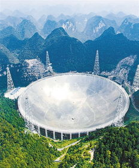

Related pictures
-

- 

FAST, with China's independent intellectual property rights, is currently the largest and most powerful single antenna radio telescope in the world. Its design comprehensively reflects China's high-tech innovation capability. It will provide opportunities for discovery and breakthrough in many fields of basic research, such as large-scale physics of the universe, deep-level structure and laws of matter, etc. It will also play an irreplaceable role in Japan-Earth environment research, national defense construction and national security, etc. Its construction will promote the development of many high-tech fields and improve the original innovation ability, integrated innovation ability and the ability to introduce, digest, absorb and re-innovate. Its construction and operation will promote the economic prosperity and social progress in the western region and conform to the overall national strategy for regional development.
FAST's 500-meter antenna will be the largest single-aperture telescope in the world, and its sensitivity will be about 10 times higher than the 100-meter telescope in Bonn, Germany, which is called "the largest machine on the ground". If celestial bodies are evenly distributed in space, the number of FAST observable targets will increase by about 30 times. Compared with the U.S. Arecibo 300 telescope, FAST has a sensitivity 2.25 times higher, and the working limit of Arecibo 20° zenith angle limits the observation sky area, especially the networking observation capability. It can be predicted that FAST will maintain its position as the world's first-class equipment in the next 20-30 years, and will attract first-class talents and leading scientific research topics at home and abroad to become an international astronomical academic exchange center.
It can extend China's space measurement and control capability from geosynchronous orbit to the outer edge of the solar system, increasing the downlink rate of deep space communication data by 100 times.
pulsar arrival time measurement accuracy has been improved from 120 nanoseconds to 30 nanoseconds, making it the most accurate pulsar timing array in the world and making pulsar clocks for the prospective study of autonomous navigation. Carry out high-resolution microwave patrol, diagnose and identify weak space signals with resolution of 1HZ, and serve national security as passive strategic radar.
based on FAST's powerful function, if aliens exist in the galaxy (about 150,000 light-years in diameter), their information is likely to be discovered. Dan Waseemer, chief scientist of the international scientific research project SETI, recently proposed to China that he hopes to install equipment in FAST to cooperate in searching for alien signals.